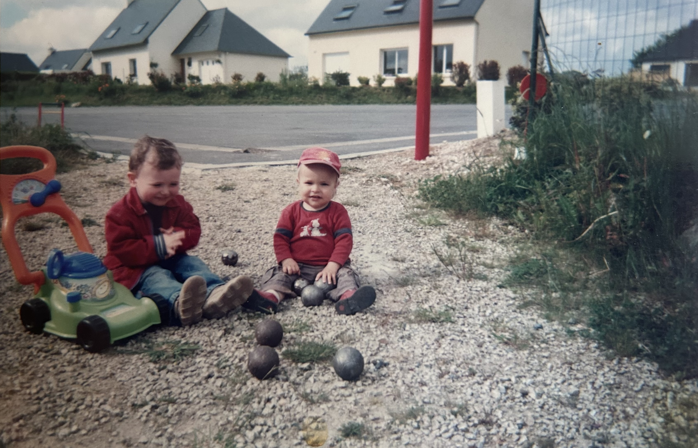
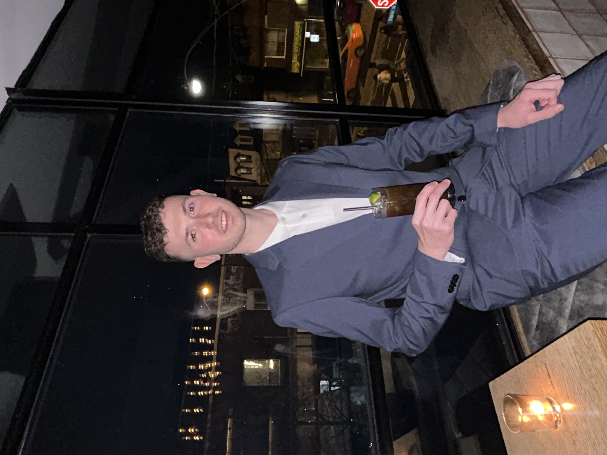
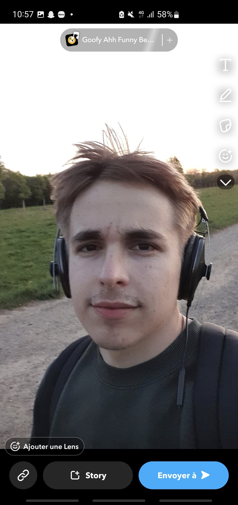

Nous, c'est Dorian et Paul. On se connaît depuis notre plus jeune âge : on a grandi ensemble en étant voisins dans un petit village en Bretagne. Depuis 20 ans, on ne s'est jamais perdus de vue et on est toujours restés de très bons amis.
Pétanque Online est né de notre amitié et de la passion de Dorian pour la pétanque. On s'est donné une mission claire : casser l'image du « sport de camping » et montrer que la pétanque peut être aussi dynamique que moderne. Notre objectif ? Donner envie aux gens de sortir, de se rencontrer et de vivre de vrais moments de partage sur le terrain.

Je m'appelle Dorian, j'ai 22 ans et je viens du Finistère. Je joue à la pétanque depuis l'âge de 5 ans, un sport qui fait partie intégrante de ma vie et de mon histoire familiale, puisque toute ma famille y joue et que mes parents se sont même rencontrés autour d'un terrain de pétanque.
Calme, sérieux et passionné, j'aime autant la pétanque conviviale que la compétition. À travers Pétanque Online, je souhaite partager mon expérience et transmettre les valeurs fortes de la pétanque : respect, esprit d'équipe et convivialité.

Moi, c'est Paul. Souriant, posé et sociable, j'aime avant tout les échanges simples et les bons moments partagés. La pétanque, je la pratique surtout comme un loisir, en famille ou entre amis, pour ce qu'elle représente : la convivialité et le plaisir d'être ensemble.
Après mes études, j'ai eu envie de passer du côté concret et de me lancer dans un projet qui ait du sens. Avec Pétanque Online, je mets aujourd'hui ma créativité et mes compétences au service d'un projet humain, dynamique et fédérateur.
L'idée de créer ce site est née de notre envie de rassembler les passionnés de pétanque autour d'un espace commun, où chacun peut échanger, s'informer et partager sa passion, qu'il soit joueur loisir ou compétiteur.
Pendant deux mois, chaque matin, on se retrouvait pour travailler sur notre idée, expérimenter des fonctionnalités et résoudre les problèmes ensemble. On a beaucoup appris sur la création d'un projet, sur nous-mêmes et sur la manière de mener une idée à terme. Aujourd'hui, notre site Pétanque Online est en ligne et nous espérons le voir grandir. Nous continuerons à travailler pour le faire connaître, auprès de tous les passionnés et des novices qui veulent découvrir la pétanque.
La pétanque est avant tout un sport de partage et de bonne humeur. Nous tenons à créer un espace où chacun se sent bienvenu, dans le respect et l'esprit d'amitié.
La pétanque est aussi un formidable moyen de créer du lien social. Elle permet de rencontrer du monde, d'échanger, de partager des moments simples et de ne pas rester seul. À travers Pétanque Online, nous souhaitons encourager les rencontres, les discussions et la création d'une vraie communauté.
Chacun a ses propres objectifs, qu'ils soient sportifs ou personnels. Avec du travail, de la persévérance et du respect, tout est possible, que ce soit à la pétanque ou dans d'autres domaines de la vie. Nous croyons en l'importance de se fixer des buts et de tout faire pour les atteindre.
Que vous soyez débutant, amateur ou joueur confirmé, nous serons ravis de vous accueillir. Rejoignez notre communauté et partageons ensemble la passion de la pétanque !
S'inscrire maintenant